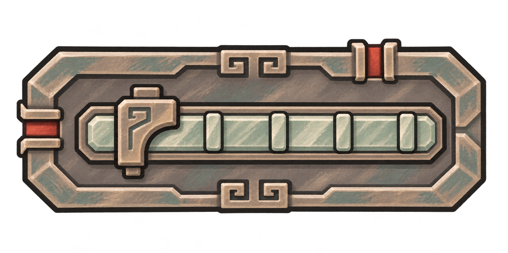
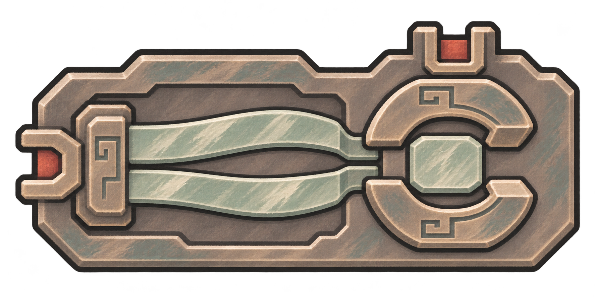
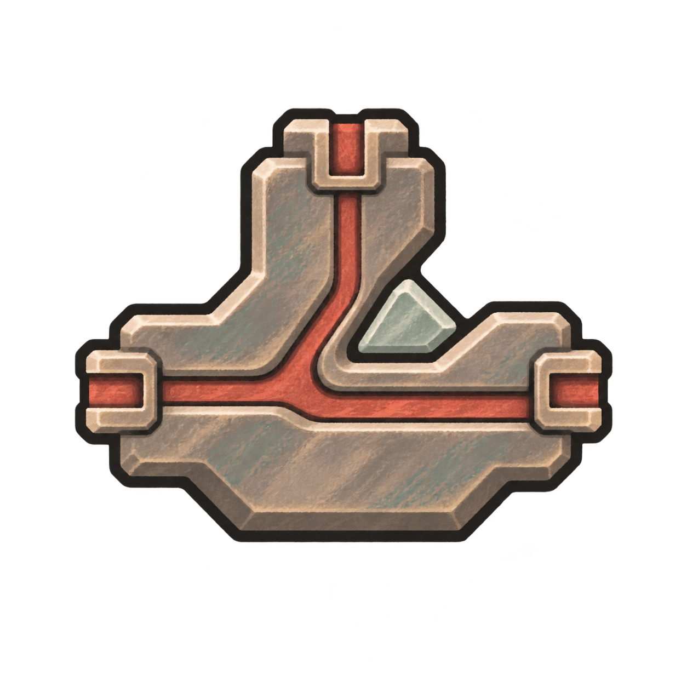
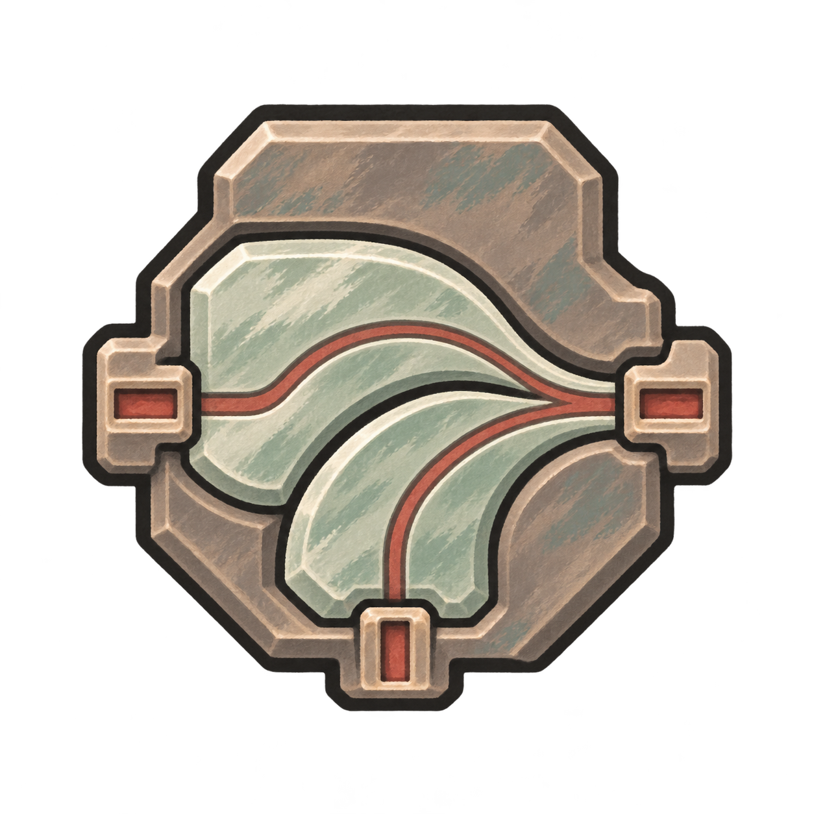

候枢：本例N＝3
前两次记下，第三次放行，再从零计数。
已数0／3次
送入信号，看看候枢如何计次。
设计对照稿
把“何时放行、放哪一路”交给阵枢。它们只处理信号，没有供能口。

按真实占格比例显示；下列均为普通元件。

数够N次才放行
信号：左入 → 右格上出
按节拍控制已有信号
信号：左入 → 右格上出只放符合条件的信号
信号：左入 → 右出
一路分成两路
信号：左入 → 上／右出
多路汇一处，同一事件只算一次
信号：左／下入 → 右出前两次记下，第三次放行，再从零计数。
送入信号，看看候枢如何计次。
任一路都能进入合脉；同一事件绕两路抵达，仍只算一次。
合脉枢顺时针转90°，上／左入、下出。此处只看局部接线关系。
先数够三次，再传给护持阵器。
复杂度4／4
阵眼固定在第二列、第二行。这里展示摆法，不演算护持效果。